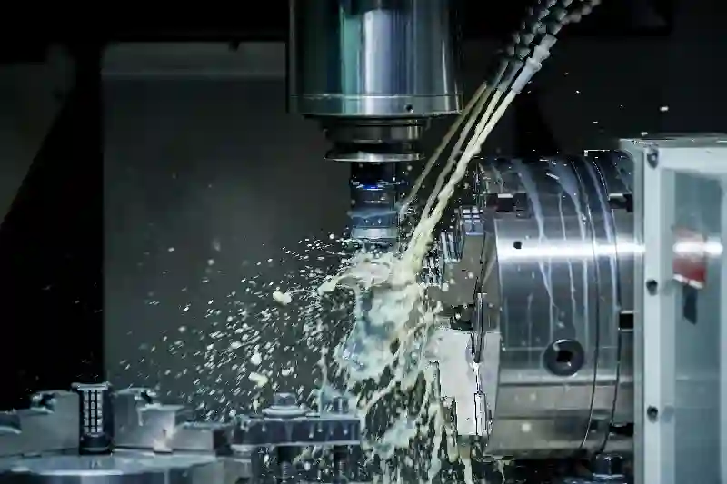
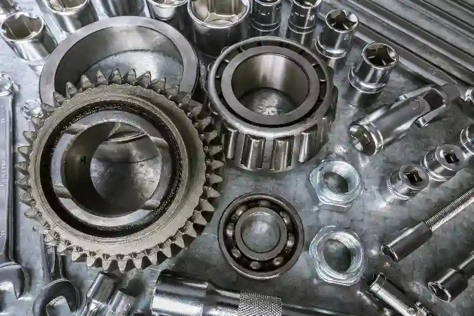

Makine ve Endüstri Üretim ÇözümleriHassas CNC İşleme ve Talaşlı İmalat
Makine ve endüstri sektörü, üretim hatlarının verimliliğini, dayanıklılığını ve güvenilirliğini belirleyen mekanik parçaların yüksek hassasiyetle üretilmesini gerektirir. Bu nedenle Makine ve Endüstri Üretim Çözümleri, yalnızca standart bir imalat sürecinin ötesinde; mühendislik prensiplerinin, tolerans yönetiminin, malzeme bilgisinin ve ileri CNC teknolojilerinin entegre edildiği bir üretim kültürü gerektirir. Aymaksan Makine olarak, endüstriyel projelerdeki kritik gereksinimleri karşılayabilmek için modern makine parkımız ile geliştirilen özel üretim altyapısını kullanıyoruz. Bu yaklaşım, tasarımdan üretime, prototipten seri imalata kadar tüm aşamaları kontrollü ve sürdürülebilir hale getiriyor.
Makine üreticilerinin ihtiyaç duyduğu kompleks mekanik parçalar, çoğu zaman mikron toleranslarla işlenmeli ve çalışma koşullarında maksimum dayanıklılık sunmalıdır. Bu gereksinimleri karşılamak için CNC tornalama, CNC frezeleme, talaşlı imalat ve endüstriyel montaj süreçlerini bütünsel bir yapı halinde uyguluyoruz. Aynı zamanda CNC işleme hizmeti gibi hizmetleri de geniş kapsamlı bir üretim yaklaşımıyla sunuyoruz.
Makine ve Endüstri Sektöründe Hassas Üretimin Önemi
Makine ve endüstri sektörüne yönelik üretimin temelini, dayanıklılık ve tekrarlanabilirlik oluşturur. Üretilen her parçanın, tasarım dosyasında belirtilen teknik değerlere %100 uyum sağlaması; hem makine verimliliğini artırır hem de proses güvenliğini güçlendirir. Bu doğrultuda firmamız, makine ve endüstri üretim çözümleri ve endüstriyel makine parça imalatı alanında yüksek hassasiyet gerektiren operasyonlarda uzmanlaşmış bir üretim modeli benimser. Bu yaklaşım, farklı makina tiplerine, çalışma sıcaklıklarına, yük koşullarına ve hareket karakteristiklerine göre optimize edilmiş üretim tekniklerinin uygulanmasını gerektirir.
Makine üreticileri, projelerinde kullanacakları parçaların sadece boyutsal doğruluk açısından değil, yüzey pürüzlülüğü, malzeme stabilitesi ve uzun çalışma ömrü açısından da güvenilir olmasını ister. Bu nedenle Aymaksan Makine’de üretim süreci; tasarım, malzeme seçimi, kesme parametreleri ve ölçüm raporlaması gibi her aşamanın mühendislik denetiminden geçirildiği bir sistematikle ilerler.


Endüstriyel Makine Parçalarında Yüksek Hassasiyet Gereksinimleri
Günümüz endüstriyel makinelerinde kullanılan parçaların çalışma toleransları giderek düşmekte ve performans beklentisi artmaktadır. Bu nedenle makine ve endüstri üretim çözümleri ve makine üreticileri için CNC işleme çözümleri yalnızca kesme operasyonu değil, gelişmiş proses kontrol teknikleri ve ileri ölçüm yöntemleri gerektirir. Özellikle hareketli mekanizmalarda yer alan miller, yataklama parçaları, şaftlar, flanşlar ve bağlantı bileşenleri mikron seviyesinde uyum sağlayacak biçimde işlenmelidir.
Aymaksan Makine, bu gereksinimleri karşılamak için koordinat ölçüm cihazları, yüzey pürüzlülüğü test ekipmanları ve hassas tolerans kontrol sistemleri kullanır. Böylece endüstriyel projelerde beklenen uzun ömür ve düşük arıza oranı standart hale getirilir.
Tolerans Kontrolü ve Ölçüm Süreçlerinin Rolü
Hassas üretimde ölçüm yalnızca bir doğrulama adımı değil, doğrudan üretimin ayrılmaz bir parçasıdır. Çünkü tolerans sapmaları, makinenin genel performansını doğrudan etkileyebilir. Bu nedenle Aymaksan Makine olarak makine ve endüstri üretim çözümleri ve yüksek hassasiyetli talaşlı imalat hizmetleri kapsamında, her parçayı ölçüm makinemizden geçirerek mikron düzeyinde doğruluk sağlar ve üretim raporlarını müşterilerimize sunar.
Bu yaklaşım, özellikle seri üretimde tekrarlanabilirliği garanti altına alır ve makine imalatçılarına yüksek standartta güvenilir bileşenler sağlar.
Projeni Başlat
CNC İşleme Teknolojileri ile Endüstriyel Üretimde Verimlilik
Makine ve endüstri alanında verimliliğin sürdürülebilir biçimde artırılması, kullanılan üretim teknolojilerinin kapasitesine, doğruluk seviyesine ve proses güvenilirliğine bağlıdır. Modern CNC teknolojileri, bu gereksinimleri karşılamak adına yüksek hız, tekrarlanabilir hassasiyet ve uygun maliyet avantajlarını bir arada sunar. Aymaksan Makine olarak üretim sürecini planlarken, tüm parçaların fonksiyonel gerekliliklerini, yük altında davranışlarını ve birleşim noktalarındaki mekanik ihtiyaçlarını dikkate alıyoruz. Böylece makine hatları için dayanıklı metal bileşen imalatı gibi kompleks süreçlerde, hassas işlemenin her aşamasını kontrol altında tutuyoruz.
CNC sistemlerinde kullanılan çok eksenli yapı, kesme parametrelerinin optimize edilmesini sağlar ve karmaşık geometrilerin hızlı bir şekilde işlenmesine imkân tanır. Bu da makine üreticilerinin AR-GE döngülerinde prototip süreçlerini hızlandırır ve üretim maliyetlerinin önemli ölçüde düşmesine yardımcı olur. Modern işleme yöntemlerinin uygulanması, tasarımdan montaja uzanan zincirin her aşamasını uyumlu hale getirir.
CNC Tornalama Çözümleri
Endüstriyel makine parçalarının büyük bölümü, dönel simetri gerektiren geometrilere sahiptir. Bu nedenle CNC tornalama, makine sektöründe en sık ihtiyaç duyulan üretim süreçlerinden biridir. Aymaksan Makine’nin makine parkında yer alan Doosan / DN Solutions PUMA 280L ve SB-20R Tip G CNC Otomatik Torna gibi yüksek performanslı tezgâhlar, küçük çaplı hassas bileşenlerden ağır sanayi parçalarına kadar geniş bir aralıkta üretim yapılmasını sağlar. Bu tezgâhların stabilitesi ve işleme kapasitesi, makine ve endüstri üretim çözümleri ve seri üretime uygun CNC tornalama çözümleri geliştirmemize olanak tanır.
CNC tornalama sürecindeki en kritik unsurlar, kesme kuvvetlerinin optimize edilmesi, talaş tahliyesi ve yüzey kalitesi yönetimidir. Özellikle endüstriyel otomasyon parçaları işleme hizmeti kapsamında üretilen miller, pimler, yataklama bileşenleri ve bağlantı noktaları; hem eksenel doğruluk hem de yüzey pürüzlülüğü açısından yüksek performans gerektirir. Bu nedenle üretim süreci boyunca sürekli ölçüm ve kontrol mekanizmaları uygulanır.
CNC Frezeleme ve Dik İşleme Yetkinlikleri
Endüstriyel makinelerde kullanılan parçaların büyük kısmı, üç boyutlu kompleks geometrilere sahiptir. Bu nedenle CNC frezeleme, makine ve endüstri sektöründe en kritik üretim süreçlerinden biridir. Aymaksan Makine olarak, DAHLIH MCV-1450 Dik İşleme Merkezi ile geniş ebatlı parçaları yüksek hassasiyetle işleyebiliyor; 3 eksen işleme kapasitesi sayesinde karmaşık kanallar, bağlantı yüzeyleri, cepler ve oturma bölgeleri gibi detay gerektiren tüm yüzeyleri kusursuz biçimde işleyebiliyoruz.
Bu süreçte kullanılan frezeleme stratejileri, malzeme tipine, kesme direncine ve yüzey kalitesi gereksinimlerine göre uyarlanır. Böylece makine ve endüstri üretim çözümleri içerisinde tolerans kontrollü CNC frezeleme üretimi sağlayarak, makine ve endüstri projelerinde kritik görev üstlenen parçaların güvenilirliğini artırıyoruz.
Frezelenen yüzeylerin geometrik doğruluğu, çalışma sırasında makinenin stabilitesini doğrudan etkilediğinden; dik işleme merkezlerinde rpm, ilerleme hızı, kesme parametreleri ve takım seçimi en iyi sonuç için özel olarak optimize edilir.
Prototip Üretim ve Ar-Ge Süreçlerinde Makine Sektörüne Özel Yaklaşımlar
Özellikle makine ve endüstri alanında tasarlanan yeni ürünler veya proses iyileştirme amaçlı yapılan çalışmalar, genellikle prototip aşaması ile başlar. Bu nedenle üretim firmalarının, prototip sürecini sadece hızlı değil; aynı zamanda yüksek doğrulukla gerçekleştirmesi gerekir. Aymaksan Makine olarak, makine ve endüstri üretim çözümleri içinde makine ve endüstri için prototip üretim süreçleri kapsamında tasarımdan numune üretimine kadar tüm adımları organize ediyoruz.
Prototip üretim sürecinde amaç, son ürünün performansını önceden test edebilmek ve tasarımsal revizyonları düşük maliyetle gerçekleştirmektir. Bu nedenle frezeleme, tornalama, kaynak, montaj ve ölçüm süreçlerinin her biri süreç boyunca eşzamanlı yürütülür.
Bu kapsamda Google Ads odaklı bir diğer kelime olan prototip parça imalatı fiyat ifadesi içerikte yalnızca bir kez kullanılmıştır.
Prototip üretim faaliyetleri özellikle şunları kapsar:
• Tasarım doğrulama
• Geometrik uyum kontrolü
• Fonksiyon testleri
• Malzeme uyumluluk analizi
• Seri üretime hazırlık
Bu yaklaşım sayesinde firmalar, üretilecek makinenin performansını önceden analiz edebilir, tasarım hatalarını henüz üretim başlamadan tespit edebilir ve zaman kaybını minimuma indirebilir.
CNC İşleme ile Metal Bileşenlerde Dayanıklılık ve Performans Artışı
Makine ve endüstri projelerinde kullanılan metal bileşenlerin, çalışma koşullarında yüksek dayanıklılık sunması gerekir. Bu nedenle işleme sırasında hem malzeme yapısının korunması hem de yüzey kalitesinin optimize edilmesi önemlidir. Aymaksan Makine olarak, üretim sürecinde metal işleme süreçlerinde kalite kontrol hizmetleri uygulayarak, hem mekanik dayanımı hem de uzun çalışma ömrünü garanti altına alıyoruz.
Her üretim adımında yapılan ölçüm testleri, parçaların çalışma esnasında vibrasyon, ısıl genişleme, sürtünme ve yük altında deformasyon gibi olumsuz etkileri minimuma indirmesine yardımcı olur. Bu doğrultuda, endüstriyel parça üretimi, hem prototip hem seri üretimde hatasız ve sürdürülebilir bir üretim akışı sağlar.
Projeni Başlat
Kalite Kontrol, Ölçüm ve Endüstriyel Standartlara Uyum
Makine ve endüstri sektöründe üretimin güvenilirliğini belirleyen en önemli kriterlerden biri, kalite kontrol ve ölçüm süreçlerinin doğruluğudur. Parçaların tasarım toleranslarına uygunluğu; makinenin performansını, titreşim kontrolünü, dayanım optimizasyonunu ve uzun vadeli iş güvenliğini doğrudan etkiler. Bu nedenle Aymaksan Makine, makine ve endüstri üretim çözümleri için üretim hizmetlerinin her aşamasında metal işleme süreçlerinde kalite kontrol hizmetleri uygulayarak ölçüm süreçlerini uluslararası standartlara göre yürütür.
Her üretim adımı, hem ara ölçüm hem de final ölçüm kontrolleriyle doğrulanır. Yüzey pürüzlülüğünden geometrik doğruluğa, çap ölçümlerinden eksen kaçıklığına kadar her detay; gelişmiş ölçüm cihazlarıyla test edilir. Bu sayede hem prototip hem de seri üretimde tutarlı bir kalite standardı yakalanır. Endüstriyel makine üreticilerinin beklediği performans seviyesinin sürdürülebilir olması için ölçüm raporlamaları da sürece dahil edilir.
Ölçüm ve kalite kontrol, yalnızca doğrulama aşaması değil; üretim stratejisinin tamamını yönlendiren kritik bir faktördür. Makine sektöründe kullanılan parçaların toleranslarının mikron seviyesine kadar inebilmesi, bu sürecin önemini daha da artırmaktadır.
Aymaksan Makine’nin Makine Parkı ile Endüstriyel Üretim Gücü
Makine ve endüstri sektöründe çeşitlilik gösteren projelere yüksek doğrulukla hizmet verebilmek için esnek ve güçlü bir makine parkına sahip olmak kritik bir gerekliliktir. Aymaksan Makine, üretim kapasitesini Makine ve Endüstri Üretim Çözümleri kapsamında optimize ederek, hem küçük hem de büyük çaplı projelerde yüksek tekrarlanabilirlik sağlar. Makine parkında yer alan her tezgâh, farklı endüstriyel ihtiyaçları karşılamak üzere seçilmiş ileri teknolojilere sahiptir.
Aşağıda, makine parkının sektörel üretime katkı sağlayan özelliklerinden bazılarını detaylı biçimde inceleyelim:
DAHLIH MCV-1450 Dik İşleme Merkezi ile Büyük Ebatlı Parça İşleme
Tolerans kontrollü CNC frezeleme üretimi gerektiren geniş ebatlı parçalar, makine ve endüstri projelerinde özellikle kritik rol oynar. DAHLIH MCV-1450, yüksek rijitlik, güçlü tabla yapısı ve geniş işleme hacmi sayesinde bu tür parçaların güvenilir biçimde işlenmesini sağlar.
Bu tezgâh, ağır yük altında bile stabilitesini korur ve kompleks geometrilerin tüm yüzeylerinde aynı hassasiyet seviyesini sunar. Bu özellik, özellikle endüstriyel makine iskeletleri, bağlantı plakaları, gövde yüzeyleri ve makine şasi parçalarının işlenmesinde büyük avantaj sağlar.
Doosan / DN Solutions PUMA 280L ile Seri Tornalama Çözümleri
Yüksek dayanım gerektiren miller, flanşlar, bağlantı parçaları ve endüstriyel sistem elemanlarının işlenmesi için tasarlanan PUMA 280L, seri üretime uygun CNC tornalama çözümleri geliştirmemize olanak tanır. Bu tezgâh, özellikle tekrarlı işlerde minimum tolerans sapması elde edilmesini sağlar.
Sıklıkla otomasyon sistemleri, paketleme makineleri, konveyör hatları, robotik sistemler ve özel makine ekipmanlarında kullanılan parçalar, bu tezgâhın sunduğu yüksek verimlilik sayesinde hızlı ve güvenilir biçimde üretilir.
SB-20R Tip G CNC Otomatik Torna ile Küçük Çaplı Hassas Parça Üretimi
Endüstriyel makine projelerinde en kritik bileşenlerin başında küçük çaplı metal parçalar gelir. Bu parçalar hem hareketli mekanizmaların kalbini oluşturur hem de teknik fonksiyon açısından yüksek doğruluk gerektirir. SB-20R Tip G, endüstriyel otomasyon parçaları işleme hizmeti gibi hassasiyet odaklı üretimlerde kusursuz bir performans sunar.
Çok milli işleme kapasitesi sayesinde, küçük çaplı parçaların seri üretimi hızlı ve düşük maliyetli hale gelir. Ayrıca mikron seviyesinde ölçüm doğruluğu sağlayan yapısıyla, makinelerde kullanılacak bileşenlerin çalışma ömrü ve enerji verimliliği üzerinde doğrudan pozitif etki oluşturur.
TIG Kaynak Makinesi PoWerPlus TIG 320 AC/DC Pulse ile Metal Birleştirme Çözümleri
Makine ve endüstri projelerinde, işleme sonrası birleştirme gereksinimi oldukça yaygındır. TIG 320 AC/DC Pulse, yüksek saflıkta ve çapaksız kaynak uygulamaları için ideal bir yapıya sahiptir. Özellikle ince malzemelerde ve estetik kaynak gerektiren projelerde üstün sonuç verir. Bu makine sayesinde, prototip veya seri üretim projelerinde talaşlı imalat ile kaynak süreçleri arasında tam uyum sağlanır.
Gedik Fronius 304 Amper Gazaltı Kaynak Makinesi ile Dayanıklı Üretim
Kalın kesitli malzemelerde ve ağır yük altında çalışacak endüstriyel makine bileşenlerinde dayanıklılık en önemli faktördür. Fronius 304, güçlü gazaltı kaynak yetenekleriyle, yüksek mukavemet gerektiren projelerde kusursuz bir birleştirme performansı sunar. Özellikle makine gövdelerinde, konstrüksiyon parçalarında ve bağlantı elemanlarında kullanılan birleşim bölgeleri bu teknoloji sayesinde uzun ömürlü hale getirilir.
Komple Üretim: Kaynak, Montaj ve Mekanik Entegrasyon
Makine ve endüstri projelerinin birçoğunda talaşlı imalat, kaynak ve montaj süreçleri birlikte ilerler. Aymaksan Makine, endüstri makinelerine özel mekanik parça üretimi süreçlerinin ardından tam entegrasyon hizmeti sunarak üretim sürecini tek çatı altında toplar. Bu entegrasyon sayesinde:
- Proje süresi kısalır,
- Montaj hataları minimuma iner,
- Mekanik uyumluluk testleri daha doğru yapılır,
- Yüksek hassasiyetli parçalar tek hat üzerinde entegre edilir.
Montaj sonrası ölçüm ve çalışma testleri ile her bileşenin görevini doğru şekilde yerine getirdiği doğrulanır.
Projeni Başlat
Sektörel Kullanım Alanları – Makine ve Endüstri İçin Üretim Örnekleri
Makine ve endüstri sektörü, geniş bir uygulama alanına sahip olduğu için farklı tipte bileşenlerin hassas işlenmesini zorunlu kılar. Aymaksan Makine olarak, hem prototip hem de seri üretim süreçlerinde müşterilerimizin beklentilerine uygun şekilde özelleştirilmiş imalat çözümleri sunuyoruz. Ürünün fonksiyonunu, çalışma ortamını, yük dağılımını ve montaj pozisyonunu analiz ederek üretimin her aşamasında sürdürülebilir kalite sağlıyoruz.
Özellikle Makine ve Endüstri Üretim Çözümleri kapsamında en çok talep edilen parçalar; miller, flanşlar, yataklama elemanları, bağlantı bileşenleri, gövde parçaları, makine iskeletleri, iç mekanizma bileşenleri ve özel tasarım parçalar olarak öne çıkar. Bu parçaların üretimi, hem metal işleme kabiliyetinin hem de mühendislik bilgi birikiminin entegre edildiği bir yapıyı gerektirir.
Farklı sektörlerdeki kullanım alanlarından bazıları şunlardır:
• Otomasyon makineleri
• Paketleme ve ambalaj sistemleri
• Proses makineleri
• Konstrüksiyon ekipmanları
• Endüstriyel robotik hatlar
• Gıda, tekstil, plastik ve ambalaj üretim makineleri
• Konveyör sistemleri
• Hidrolik ve pnömatik sistem bileşenleri
Bu çeşitlilik, üretimde esneklik sağlayan geniş bir makine parkı gerektirir. Bu nedenle Aymaksan Makine, her sektörün teknik beklentilerine uygun üretim altyapısını geliştirerek müşteri odaklı çözümler sunar.
Endüstriyel Parçaların Üretiminde Kullanılan Malzemeler ve İşleme Stratejileri
Makine ve endüstri sektörüne özel parçaların çalışma koşulları; sıcaklık, yük, titreşim, aşınma ve çevresel etkilere bağlı olarak çeşitlilik gösterir. Bu nedenle üretimde kullanılacak malzemenin doğru seçilmesi, ürün performansında kritik bir rol oynar. Aymaksan Makine olarak, hem geleneksel hem de yüksek performanslı malzemelerin işlenmesinde uzmanlaşmış durumdayız.
Kullanılan başlıca malzemeler şunlardır:
• Otomotiv ve makine çeliği türleri
• Paslanmaz çelik alaşımları
• Alüminyum ve hafif alaşımlar
• Pirinç ve bronz türleri
• Islah çelikleri
• Yüksek dayanımlı özel metal alaşımları
Bu malzemelerin işlenmesi; kesme hızı, talaş kaldırma stratejisi, takım seçimi ve takım yollarının optimizasyonu gibi teknik ayrıntılar gerektirir. Böylece endüstri makinelerine özel mekanik parça üretimi süreçlerinde hem yüzey kalitesi hem de tolerans hassasiyeti kontrol altında tutulur.
Her malzeme türü, çalışma koşullarına göre farklı teknik gereksinimlere sahiptir. Örneğin:
- Paslanmaz çelik işleme sırasında ısıl genleşme ve takım aşınması kontrol edilmelidir.
• Alüminyum işleme sırasında yüksek hız ve keskin takımlar verimlilik sağlar.
• Pirinç ve bronz, hassasiyet gerektiren bağlantı elemanlarında sıkça tercih edilir.
Bu teknik detaylar, üretim sürecinde hem maliyet optimizasyonu sağlar hem de ürünün nihai performansını artırır.
Endüstriyel Montaj, Birleştirme ve Test Süreçlerinin Önemi
Makine ve endüstri projelerinde üretilen bileşenlerin bir araya gelerek mekanik olarak işlevsel bir yapıya dönüşmesi, montaj ve test süreçlerinin doğruluğuna bağlıdır. Talaşlı imalatın ardından, parçaların birbirleri ile uyumunu doğrulamak için titiz bir montaj aşaması uygulanır. Bu aşamada, parçaların birbiriyle olan geometrik ilişkisi, oturma yüzeylerinin doğruluğu ve hareketli parçaların çalışma uyumu değerlendirilir.
Aymaksan Makine, montaj sürecinde uluslararası standartlara uygun bir metodoloji kullanır. Bu süreçte:
- Parçaların mekanik uyum kontrolü yapılır
• Gerekli yüzey temizleme ve işlem sonrası hazırlıklar gerçekleştirilir
• Bağlantı elemanlarının yük taşıma kapasiteleri test edilir
• Hareketli parçalar için performans testleri uygulanır
• Operasyonel güvenlik kriterlerine uygunluk doğrulanır
Montaj tamamlandığında, tüm bileşenlerin çalışma verimliliğini ve dayanıklılığını garanti eden kapsamlı bir fonksiyon testi gerçekleştirilir. Bu yaklaşım, yüksek hassasiyetli talaşlı imalat hizmetleri ile başlayan üretim sürecini, son kullanıcıya hazır bir endüstriyel sistem haline getirir.
Endüstriyel Üretimde Verimlilik ve Maliyet Optimizasyonu
Makine sektörüne yönelik üretimde müşterilerin en çok önemsediği konulardan biri, verimli ve maliyet açısından etkin bir süreç elde etmektir. Aymaksan Makine, üretim hattını optimize eden operasyonel stratejiler geliştirerek hem süre hem maliyet açısından büyük avantajlar sağlar. Bu optimizasyon; kesme parametrelerinin ayarlanması, doğru malzeme seçimi, takım yollarının optimize edilmesi, kalite kontrol süreçlerinin hızlandırılması ve montaj entegrasyonunun tek çatı altında toplanması sayesinde gerçekleştirilir.
Üretimde verimlilik sağlayan başlıca unsurlar:
• Tek seferde işleme kapasitesi
• Yüksek tekrarlanabilirlik
• Minimum fire oranı
• Proses adımlarının entegrasyonu
• Gelişmiş ölçüm raporlaması
• Üretimin ERP destekli takip edilmesi
Bu avantajlar, özellikle makine hatları için dayanıklı metal bileşen imalatı süreçlerinde üretim kalitesini artırırken maliyetin düşmesini sağlar. Böylece müşteriler, tasarım ve üretim süreçlerinde hem ekonomik hem de teknik olarak avantaj elde eder.
Projeni Başlat
Aymaksan Makine’nin Endüstriye Sunduğu Katma Değer
Aymaksan Makine, makine ve endüstri sektörüne sunduğu üretim gücünü yalnızca modern makine parkına değil; aynı zamanda mühendislik odaklı üretim kültürüne, kalite kontrol süreçlerine ve müşteri odaklı yaklaşımına borçludur. Üretim süreçlerinde uygulanan her aşama, makine sektörünün ihtiyaç duyduğu yüksek hassasiyeti, dayanıklılığı ve güvenilirliği desteklemek için tasarlanmıştır.
Özellikle Makine ve Endüstri Üretim Çözümleri kapsamında hedefimiz, müşterilerimizin beklentilerini yalnızca karşılamak değil, aynı zamanda projelerinin performansını artıran bir üretim ortağı olmaktır. Bu doğrultuda:
- Ürün tasarım aşamasından itibaren teknik danışmanlık sağlarız
• Prototip süreçlerinde mühendislik optimizasyonu yaparız
• Seri üretimde tekrarlanabilirliği garanti ederiz
• Kaynak, montaj ve kontrol adımlarını tek merkezde toplarız
• Tüm üretim süreçlerini ölçüm raporlarıyla doğrularız
Bu yaklaşım, doğru planlanmış bir üretim döngüsü ile müşterilerimize zaman, maliyet ve verimlilik açısından önemli kazanımlar sunar.
Endüstriyel Çözümlerde Dijitalleşme ve Üretim Takibi
Günümüz üretim süreçlerinde dijitalleşme artık bir trend değil; zorunlu bir gerekliliktir. Aymaksan Makine, endüstriyel projelerde kullanılan parçaların üretimini dijital takip sistemleriyle yöneterek süreçlerin şeffaf ve izlenebilir olmasını sağlar. Her parçanın üretim adımları, kalite kontrol verileri ve ölçüm raporları dijital olarak kayıt altına alınır. Bu sayede müşteriler, projelerinin hangi aşamada olduğunu açıkça görebilir.
Dijital üretim takibi, şu avantajları sağlar:
• Proses adımlarında hataya yer bırakmayan şeffaflık
• Seri üretimde lot bazlı izlenebilirlik
• Ölçüm raporlarının sistematik saklanması
• Proje teslim tarihlerinin öngörülebilirliği
• Müşteriye özel üretim formlarının otomatik oluşturulması
Özellikle endüstriyel makine parça imalatı süreçlerinde her detayın kayıt altına alınması, uzun vadede hem kalite hem de sürdürülebilirlik açısından sektör için ciddi katma değer oluşturur.
Sürdürülebilir Üretim Yaklaşımı ve Çevresel Etkilerin Azaltılması
Makine ve endüstri sektörü, doğası gereği enerji tüketiminin yüksek olduğu üretim süreçlerini içerir. Bu nedenle çevre dostu ve sürdürülebilir üretim yöntemlerinin uygulanması, hem sektörel hem çevresel bir sorumluluktur. Aymaksan Makine, üretim süreçlerinde enerji verimliliğini artıran modern tezgâhlar, optimize edilmiş kesme stratejileri ve minimum fire oranı sağlayan işleme yöntemlerini tercih eder.
Sürdürülebilir üretim kapsamında:
• Optimize edilmiş takım yolları ile enerji tasarrufu sağlanır
• İşleme sırasında gereksiz ısıl yük minimuma indirilir
• Takım ömrü optimizasyonu ile atık azaltılır
• Kullanılan malzemelerde geri dönüştürülebilir seçenekler değerlendirilir
• Üretim atıkları sınıflandırılarak çevreye uyumlu şekilde bertaraf edilir
Bu yaklaşım, makine ve endüstri için prototip üretim süreçleri dahil her adımda uygulanır ve çevresel etkilerin azaltılmasına önemli katkı sağlar.
Müşteri Odaklı Üretim Yaklaşımı ve Proje Yönetimi
Aymaksan Makine’nin üretim anlayışı, tamamen müşteri ihtiyaçlarını merkeze alan bir metodolojiye dayanır. Projelerin gereksinimleri analiz edilir, en uygun üretim planı hazırlanır ve olası riskler daha üretim başlamadan değerlendirilir. Proje süreci boyunca müşteriye düzenli bilgi verilerek şeffaf bir iletişim sağlanır.
Müşteri odaklılığın temel unsurları şunlardır:
• Teknik çizimlerin kapsamlı şekilde analiz edilmesi
• Üretim öncesi risk değerlendirmesi
• Prototip ve seri üretimde süreklilik planlaması
• Maliyet ve kalite optimizasyonu
• Teslim sonrası teknik destek
Bu yaklaşım sayesinde, makine ve endüstri projelerinde kullanılan tüm parçalar yüksek doğrulukla üretilirken; aynı zamanda üretim süreci boyunca tam kontrol sağlanır.
Sonuç – Makine ve Endüstri İçin Güvenilir Bir Üretim Ortağı
Makine ve endüstri sektörü, yüksek hassasiyet, dayanımlı malzeme kullanımı ve tekrarlanabilir kalite isteyen bir üretim yapısına sahiptir. Aymaksan Makine, bu gereksinimleri karşılamak için ileri CNC teknolojileri, güçlü makine parkı, deneyimli mühendislik kadrosu ve modern kalite kontrol araçlarıyla sektöre çözüm sunar.
Bu doğrultuda sunduğumuz hizmetler; makine üreticileri için CNC işleme çözümleri, seri üretime uygun CNC tornalama çözümleri, endüstriyel otomasyon parçaları işleme hizmeti, tolerans kontrollü CNC frezeleme üretimi, talaşlı imalat firması olarak uzmanlık alanlarımızı kapsar.
Aymaksan Makine ile çalışmak, teknik gereksinimlerin doğru anlaşılması, üretim süreçlerinin optimize edilmesi ve projelerin zamanında teslim edilmesi anlamına gelir. Yüksek hassasiyet gerektiren tüm makine ve endüstri projeleri için güvenilir bir üretim ortağı arıyorsanız, firmamız uzun yıllara dayanan tecrübesi ve teknoloji odaklı üretim kültürü ile yanınızdadır.
Projeni Başlat
Şu linklerde yer alan sayfaları ve web sitelerini incelemenizi de tavsiye ederiz.
Dış Kaynaklar
- ISO – International Organization for Standardization – ISO – Standards | ISO standartları için referans. Uluslararası kalite standartları.
- Machine Design | Endüstriyel tasarım ve makine mühendisliği içerikleri.
- Engineering information and connections for the global community of engineers. Find engineering webinars, research, articles, games, videos, jobs and calculators – Engineering.com | Mühendislik teknolojileri.
- Fronius International | Kaynak teknolojileri.
- Materials Project | Malzeme analizi veritabanı. The Materials Project (Malzeme Projesi), tüm inorganik malzemelerin özelliklerini hesaplamak ve bu verileri ve ilgili analiz algoritmalarını her malzeme araştırmacısına ücretsiz olarak sunmak için çok kurumlu, çok uluslu bir girişimdir. Girişimin nihai amacı, maliyetli ve zaman alıcı deneyleri, hesaplama açısından en büyük potansiyeli gösteren bileşiklere odaklayarak, yeni malzemelerin icat edilmesi için gereken süreyi önemli ölçüde azaltmaktır.
İç Kaynaklar – Hizmetlerimiz